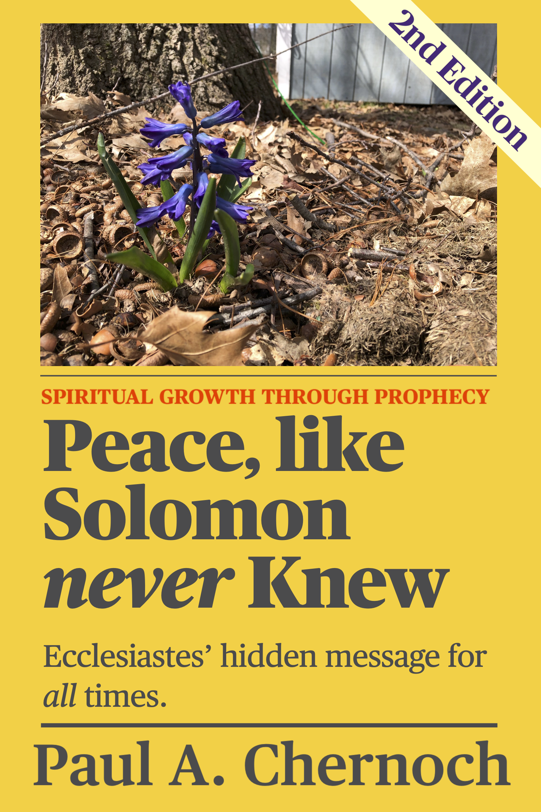

Peace, Like Solomon Never Knew
4694 words long.
On this page you will find:
- the cover art,
- a challenging maze,
- the table of contents, and
- the Preface to Peace, like Solomon Never Knew
- Peace in our Time, the first chapter of the book, which includes a full chapter outline for the book
Front Cover:

Back Cover:

Maze of Solomon's Times
There is only one solution to this maze. If you right click to open the image in a separate tab and zoom, it will make it easier to solve the maze.
One of the bird images may puzzle you. It is a mourning dove, signifying "a time to mourn".
Table of Contents
If a chapter title has a hyperlink, it may point to a page which reproduces that chapter of the book without alteration, expands upon the chapter or merely has a short excerpt of that chapter.
- Meditation & Dedication
- Acknowledgements
- Bible Versions Quoted
- Contents
- P r e f a c e
- Peace in our Time
- Five Time Paradoxes, Introduced
- Two Time Paradoxes, Illustrated
- Purpose and Peace
- Work is Purposely Futile
- Intellect is Purposely Futile
- Citizenship and Religion are Purposely Futile
- Fame is Purposely Futile
- Power is Purposely Futile
- Everything Else is Purposely Futile
- Nothing is Futile
- There is a Season
- Qualifying Time
- To Number Our Days
- Days of Darkness
- Twelve Timely Questions
- Hammer Time
- Hour of Temptation
- Three Appointments with Satan
- Solomon’s Clocks: Ecclesiastes 1
- The Final Countdown
- Four Months til Harvest
- Winding the Clock
- Day of Rest: Job 3
- Seven Churches for Seven Eras
- Timeless?
- Let’s Synchronize Our Watches
- Psalm 119: The Shepherd’s Clock
- Solomon’s Celestial Clock
- Solomon’s End Times
- Solomon’s Sundial
- Months of Futility
- Marking Time with Job
- Dialogue with History: Job 1-19
- CSI Babylon: Job 20
- The Second Half: Job 21-37
- Father Time: Job 38-42
- Generations Come and Go
- Two Patterns in History
- Swords, Seals & Surviving to Saturday
- A Missing Clock and a Missed Call
- The Time of Her Confinement
- Rightly Dividing the Words
- The Confinement Calendar
- A Grand Father Clock & a Silver Cord
- Solving the Historical Psalms
- Psalm 78: Preparation of a Nation
- Psalm 105: Seasons of Suffering
- Psalm 106: Planted in our Memory
- Psalm 107: Where is the Love?
- Psalm 114: Why?
- Psalm 135: Four Harvests
- Psalm 136: Requiem Aeternam
- A Minute Look at Matthew
- One Greater than Solomon
- Peace in His Time
- Epilogue: What Time is it?
- Aftertaste: Donner & Blitzen
- The Seven Pillars of Wisdom
- Appendix A: Heavenly Peace
- Appendix B: Index of Prophetic Clocks
- Appendix C: A Time for Israel
- Appendix D: To Number our Psalms - Only Part of Appendix is reproduced.
- Appendix E: The Plan of Proverbs
- Appendix F: Job Keeps Perfect Time
- Appendix G: A Prophetic Song of Songs
- Appendix H: Clues to the Seven Pillars
- Appendix I: A Clock for Timothy
- Bibliography
- About the Author
Preface
Do you lack power and purpose? Do you still need to be persuaded that God’s Word is both divine and holds the answers you need? Have you strayed from the path to peace? This book presents a simple progression to get you on track:
Pillars. Patterns. Prophecies. Peace.
Pillars. Proverbs 9 says that wisdom has built her house, she has hewn its seven pillars. Pillars supply the power to hold up a house. The Bible has seven pillars and by meditating on them, those pillars will be replicated within you, making your life strong. Those seven pillars are Psalms, Job, Proverbs, Song of Songs, Ecclesiastes, Matthew and Revelation. This book tackles all seven and shows how they share a unified structure: all seven conform to two special patterns.
Patterns. Like a garden, a peaceful life must be sown with good seed and cultivated diligently if a plentiful harvest is to be reaped. This book explores tactics and strategies God revealed to us to accomplish such a feat. They are drawn from the Book of Ecclesiastes, the parables of Jesus and elsewhere in Bible. The tactics revolve around a harvest pattern of seven steps which can be applied to individual challenges throughout life. The strategy is built upon the twenty-eight times of Ecclesiastes 3 which form a growth pattern. Grouped by fours into “seven pieces of peace”, these times plot an orderly course through life’s different seasons from birth to maturity, from “a time to be born” to “a time for peace”. By these patterns you can discover God’s changing purposes for you in every season of life. You can also see God’s sovereign plan for all of history.
Prophecies. Do these ancient principles and practices still work? That is where Solomon’s wisdom shines. God has shaped all of human history to conform to these same patterns. When you see hundreds of prophecies unfolding in the pages of history you can be certain that God’s plans for an eternal harvest have not been derailed. You will be persuaded that God’s Word is true, miraculous, and expertly crafted to guide you onto the path to…
Peace. If the Lord can keep an uncooperative world on track, He can establish you and guide you to your own time for peace, with Lady Wisdom as your guide.
Her ways are ways of pleasantness,
and all her paths are peace.
- Proverbs 3:17, ESV
Peace in our Time
While the world worried how long we’d have to practice “social-distancing”, while it was anxious how many more would die of the novel Coronavirus, and from where their next paycheck would come, I was dreaming. Tucked in between Good Friday and Easter Sunday, it was an early Saturday morning in April, 2020. I was all set to do something. (I don’t know what, but dreaming me was looking forward to it.) Then my dream wife (whose habits and timing are uncannily like the real thing) stopped me with that “First I have something I need you to do” look. “It’s flower day,” I said with resignation. That would mean trips to Mahoney’s Garden Center for flowers, Lowe’s or Spartan Hardware for mulch and manure, quality time with a hoe, shovel and wheelbarrow, reattaching hoses, and... you get the picture.
Then I awoke. It wasn’t flower day! Still too cold. Worried for nothing. I still had raking and leaf blowing to do. When I pushed a wheelbarrow of yard waste behind the shed, a pile of acorns and grass clippings I dumped last fall caught my eye. Amid the decaying matter rose a single grape hyacinth in full bloom. The pic I snapped of it graces the cover of this book.
Months before I began worrying about spring chores, God had already arranged for this plant to sprout, grow, and blossom. Twenty feet away was a second hyacinth! For over twenty autumns I have dumped flower pots, grass, leaves and acorns in that spot, and I never remember anything so pretty coming up the next spring.
That got me thinking. Who else used to tell a story about flowers and worrying? Jesus.
“So why do you worry about clothing? Consider
the lilies of the field, how they grow: they
neither toil nor spin; and yet I say to you that
even Solomon in all his glory was not arrayed
like one of these. Now if God so clothes the grass
of the field, which today is, and tomorrow is
thrown into the oven, will He not much more
clothe you, O you of little faith?”
- Matthew 6:28-30, NKJV
Jesus told people not to worry about clothing and used flowers to make his point, and here I was worrying about the flowers themselves! Jesus contrasted Solomon, whose wealth could get him anything he wanted, with a simple lily, prettier than a king. That would be the king who said in Ecclesiastes 10:19 that “money is the answer for everything”. Is it? Solomon was being ironic. It never occurred to me why Jesus contrasted Solomon with lilies until after I looked long and hard at one of the three books attributed to Solomon. What is the point of Ecclesiastes?
Peace. Ecclesiastes is about the long journey through life’s trials in search of peace, the final rest of a contented soul at the end of a meaningful and productive life that achieved great things lasting ‘til eternity, earned the respect of the community, the praise of God and won’t be forgotten by future generations.
Who is our guide for that journey? The wisest man (besides Jesus) who ever lived: King Solomon of Israel. Our guide — did he ever find that kind of peace? Solomon took too many wives, departed from a pure faith when he built altars to his wives’ false gods, and raised an unworthy heir. To top it off, God told him that for all his sins, the kingdom would be torn from the hands of his descendants. Would building the Kingdom of Israel into a world power, his greatest accomplishment, come to nothing? Solomon saw death’s approach and God’s sentence as an irremediable state of affairs. He was a man profoundly troubled. He was a man whose energetic quest for peace had failed.
Why should we trust a failure like King Solomon to guide us toward a life of peace? For the same reason we should trust Job, a persecuted man who accused God of treating him unjustly, to explain the love of God. For the same reason we should trust Habakkuk, a prophet who saw only enemy invasions, crop failures and ruin, to teach us the path to joy. And for the same reason we should trust Moses, a humble herdsman with just enough to feed his family, to set millions free and provide food and water to last a generation of wandering in the desert.
We should choose to trust the words they wrote because God, paradoxically, chose them to be our teachers. This book will demonstrate that Ecclesiastes is far more than a meandering collection of wise aphorisms, cautionary tales, and nihilistic jabs at materialistic hedonism. Instead, Ecclesiastes presents a systematic framework for looking at life. It identifies seven pieces that must be assembled in harmony so a peaceful life may be realized.
And then it blows your mind! The Teacher (as the writer of Ecclesiastes called himself ) who saw only ruin for his kingdom’s future was unaware of what he had accomplished. His words prophesy how those same principles of peace would be used by God to guide the entire course of human events, from the days in which he lived until the end of the world. From the fate of one person to the destiny of empires, God’s sovereignty is supreme. Once you see the pattern unfold throughout the pages of history, you will trust these principles to work for you.
Once you follow these principles yourself, you can know a peace like Solomon never knew.
What this book is not!
This book is not a Bible study or commentary. It will not in linear fashion derive insights from every verse. Ecclesiastes addresses many topics besides peace, but only such as pertain to our focus will be analyzed.
While this book is not a counseling manual, it will make the meaning clear enough to foster interior transformation. The Holy Spirit is the best counselor. After a person has comprehended and accepted part of God’s Word, the Spirit refines and deepens understanding, then applies it to their heart to promote healing and holiness and supply direction. Human counselors are not without merit. To the extent that this book shines a mirror on areas of personal weakness, it can enrich the conversations you are already having with your trusted advisors.
Over the years, special people have helped me find my way. We didn’t keep long prayer vigils. They didn’t listen to hours of me reciting my complaints and interject miraculous counsel. No, they gave me God’s words, not their own. They pointed me to a better Counselor than they could ever be. Words they introduced me to changed me. This book proposes to add my testimony of the efficacy of these words to stimulate you to study them carefully, with the result that you, too, enjoy “the peace of God which surpasses all understanding” (Philippians 4:7).
Show time!
If Solomon accomplished one thing in his writing, it was to show time in all its facets. Time is the ground on which faith rests. We want something now, but God promises it tomorrow. If we trust Him, we are at peace. If we doubt Him, we are consumed by anxiety.
Let’s begin our time together with a schedule of events. In Ecclesiastes 3, Solomon begins by saying, “there is a time to every purpose under heaven” and concludes with “a time for peace”. In blazing a path to peace, this book will focus on three critical topics: purpose, time and heaven.
Chapters 2 to 11 tussle with five paradoxes: love, joy, peace, purpose and goodness. The path to each must involve a paradox, because if it came naturally, all people would presently be at peace. Our look at purpose will be detailed. It will occupy eight of those ten chapters, beginning with “Purpose and Peace”, and examine eleven purposes for life that Solomon tried and rejected as futile. Finding the right path begins with eliminating the wrong.
Chapter 12, “There is a season”, offers a first look in Solomon’s mirror: chapter 3 of Ecclesiastes. It’s broken in seven pieces, but instead of bringing seven years’ bad luck, it will help diagnose seven problem areas in life, to find what is stealing our peace.
Chapter 13, “Qualifying Time”, shows a glimpse of my disqualifications. After you come face-to-face with the anxious, gullible, aimless fool I was in my youth and how the Lord straightened me out, you will know why I wrote this book and why its message is valuable.
Chapter 14, “To Number our Days”, catalogs the symbolic meaning of numbers that appear frequently in the Bible. By understanding these numbers, we can spot clues to the patterns God has woven into history.
Chapter 15, “Days of Darkness”, is a meditation on seven pieces of peace derived from Ecclesiastes 3 to help prepare for the days of darkness warned about by Solomon.
Chapter 16, “Twelve Timely Questions”, steps back to ask this poser: What are the twelve most important questions a person has to answer in life? We address nine primary questions, plus three that get in the way. Surely peace stands out of reach for those who lack their answers. How much farther is it removed from those who lack even the questions? We shall drill down into the questions to discover a dozen spiritual treasures worth searching your whole life for, treasures “that can never perish, spoil or fade” (1 Peter 1:4).
Chapter 17 means it’s “Hammer Time”! Solomon said, “the words of scholars are like well-driven nails” (Ecclesiastes 12:11). Some lessons must be painful, if their point is to be driven home.
Chapters 18 and 19, “Hour of Temptation” and “Three Appointments with Satan”, peek at Satan’s appointment calendar. The father of lies has impeccable timing. The enemy always knows when God is up to something special, and tries to derail God’s plans. We will listen in on all three conversations with Satan recorded in the Bible: in Genesis, Job and Matthew. If Satan tries to destroy something, you can bet it’s important.
Chapter 20, “Solomon’s Clocks: Ecclesiastes 1”, starts ticking off seven clocks, prophetic instruments built into Scripture. Satan’s clock we already covered. Four more are announced in Ecclesiastes 1: Generational, Spiritual, Celestial, and Empire. A sixth is implied: the Harvest clock. The seventh, the Lifetime clock, I found in Job while researching my previous book, Job Rises. [1] These clocks sometimes foretell specific future events, but more often foretell the character of future ages. Seeing the shape of the times in which you live recorded in the Bible changes you.
Chapter 21, “The Final Countdown”, tinkers with Satan’s countdown clock to improve its accuracy.
Chapter 22, “Four Months till Harvest”, discloses that one of the seven clocks, the Harvest clock, applies to nations and individuals. It measures spiritual growth and governs the character of each battle in the spiritual wars fought throughout life. Attune yourself to this clock and you will understand your obstacles and foes, as well as your assets and allies.
Chapters 23 to 37, from “Winding the Clock” to “Father Time: Job 38-42”, derive insights from Revelation, Ecclesiastes, Psalm 119 and Job. They examine the inner workings of all seven types of clock, one at a time. These clocks reinforce a single message. Two are widely discussed in other books on eschatology (the Spiritual and Empire clocks), so will be summarized. The Generational and Celestial clocks may be original discoveries, so extra care is devoted to explaining and justifying them.
Chapters 38 and 39, “Generations come and go” and “Two Patterns in History”, ponder a shocking idea: God may have sovereignly mirrored history using symmetric parallelism. If He engineered some sort of “cosmic chiasm”, does that narrow down when the Lord will return?
Chapter 40, “Swords, Seals & Surviving to Saturday”, scrutinizes the symbolic use of swords throughout the Bible and ties it to the seven seals on the scroll in Revelation.
Chapters 41 to 44, concluding with “The Confinement Calendar”, ponder social upheavals God has employed to liberate the world, with a focus on women. Chapter 45, “A Grand Father Clock & a Silver Cord”, discovers another clock hidden in Ecclesiastes which chronicles the work of the Father from creation to the second coming.
Chapters 46 to 53, beginning with “Solving the Historical Psalms”, dissect the seven historical psalms (Psalms 78, 105, 106, 107, 114, 135 & 136) in which we can discern a series of interlocking clocks that disclose patterns in how the Holy Spirit has worked throughout history.
Chapters 54 and 55, “A Minute Look at Matthew” and “One Greater than Solomon”, find that in the Gospel of Matthew, God outlined his plan for five major waves of Christian missionary expansion, all of which have come to fruition when, where and how He said they would. Furthermore, they find that the twenty-eight chapters of Matthew are intentionally structured according to the twenty-eight times of Ecclesiastes 3. Matthew reveals Jesus as the new and greater Solomon. Lastly, just as the early chapters showed from Ecclesiastes the futility of all human life purposes, this chapter shows from Matthew the eternal utility of God’s purposes. He graciously invites us to join us in His work, which leads to an everlasting harvest of eternal treasures.
Chapter 56, “Peace in His Time”, returns to Solomon. Why did he never find peace? Does his own book reflect his distorted priorities? Does it reflect ours?
Chapter 57, “Epilogue: What Time is it?” gathers into one place what all the clocks in this book have to say about our current time and the one about to start.
Chapter 58: “Aftertaste: Donner & Blitzen” tackles the most mysterious chapter in the Bible: Revelation 10. This is when the Apostle John hears the voices of the seven thunders speak – and a voice from heaven tells him not to write it down! What did they say?
Chapter 59: “The Seven Pillars of Wisdom” answers an ancient riddle: What are the Seven Pillars of Wisdom spoken of in Proverbs 9? The answer to this riddle fits all the wisdom books in the Bible into a single framework enabling us to see their grand design.
“Appendix A: Heavenly Peace” explains what the sevenfold harvest pattern and Solomon’s twenty-eight times tell us about heaven.
“Appendix B: Index of Prophetic Clocks” summarizes all thirty-four prophetic clocks described in the book.
“Appendix C: A Time for Israel” applies Solomon’s twenty-eight times to the history of modern Israel, with reference to Ecclesiastes and Psalm 107.
“Appendix D: To Number our Psalms” analyzes the prophecies found in Psalms 58, 91, 102, & 127.
“Appendix E: The Plan of Proverbs” shows how the book of Proverbs is patterned after the twenty-eight times listed in Ecclesiastes 3 and prophesies dozens of events from Solomon’s time until the Lord returns. (Note: The First Edition of this book suffered a publication error that deleted seventeen pages of this appendix, restored in the Second Edition.)
“Appendix F: Job Keeps Perfect Time” shows where Solomon’s twenty-eight times appear in Job. Took three years studying Job to notice them. Boy, was I surprised!
“Appendix G: A Prophetic Song of Songs” shows how the Song of Solomon also is patterned after the twenty- eight times of Ecclesiastes 3, prophetically.
“Appendix H: Clues to Wisdom’s Pillars” shows additional connections between the seven Bible books that constitute the seven pillars. It provides additional support for conclusions made in chapter 59, “The Seven Pillars of Wisdom”. It shows from Scripture that God set aside this current era as the time when He would unseal the identities of the Seven Pillars of Wisdom.
“Appendix I: A Clock for Timothy” decodes a prophetic clock hidden in 1 & 2 Timothy that connects those books to Solomon’s Growth Pattern, the Ten Commandments and prophecies in other letters of Paul.
Caveats
No book can give a comprehensive view of peace, even one as long as this. This book goes into specifics in a few areas of life, but for the rest proposes general principles:
- Tactics. To master an individual life struggle requires sound tactics. This book derives from Scripture a sevenfold harvest pattern which you can apply repeatedly throughout your days as you seek to lead a productive and fulfilling life.
- Strategy. Growing from infancy to maturity, we pass through seven stages of life, each recognized and examined by Solomon in Ecclesiastes. In each stage, a person faces a different mix of challenges. We need tools for them all.
- Goals. Our strategies and tactics must serve the pursuit of a noble, long term purpose. Ecclesiastes speaks extensively about the meaning and purpose of life – and all the false and destructive substitutes that confuse and beguile us.
- Stability. Our world appears out of control. You will not find peace trying to control it and assert your own sovereignty over it. You will find peace by recognizing the guiding and protecting hand of God in history. The same tactics, strategy and goals that we wrestle with in our short lives God has projected upon all of history. He employs them to rule the nations. He produces harvests and raises whole civilizations up from infancy to maturity, even His church. The proof of this in found in fulfilled prophecy. God keeps His promises.
The biggest caveat is that the ideas and prophecies examined in this book can in nowise be used to predict the day, the month, the year or even the century in which the Lord will return. Approximate dates for the boundaries of key time periods have been used to obfuscate the likeliest time of the second coming. This is to respect this solemn truth:
“But about that day or hour no one knows,
not even the angels in heaven, nor the Son,
but only the Father.
- Matthew 24:36, NIV
Where dating of ancient events enters the discussion, Bishop Ussher’s chronology is used (with adjustments as noted, equaling sixteen years at most), though modern scholarship, even among conservative theologians, has uncovered evidence that requires some events to be shifted a decade here or there. With competing chronologies to choose from, it would be easy to select the one that bet fits the schema of history contained in this book. No attempt to “chronology shop” has been done, even though the division of history resulting from Ussher’s work sometimes runs counter to the author’s expectations.
Truly, how accurate a date for the Lord’s return would a person need to justify changing their behavior? Within a day? Certainly. A year? Yes, again. A decade? Likely. A century? At a century, we might change how we raise our kids. How about a hundred twenty years? In the time of Noah, God issued a decree.
Then the LORD said,
“My Spirit will not contend with humans forever,
for they are mortal; their days will be
a hundred and twenty years.”
- Genesis 6:3, NIV
Christians argue about what this means, but for a very long time, no one (with indisputable documentation) has lived longer than 120 years. So if Jesus was set to return in 120 years or ten thousand years, it would make no difference to anyone now alive. They would be dead.
With this proviso I feel comfortable setting forth my ideas, constructed with care, to guide and encourage but not infringe on impermissible territory that is the prerogative of God the Father. I swear that my timetable can’t be used to narrow down the timing of the Lord’s return to an accuracy of better than 120 years.
Why make such a promise? I am not the first to tread lightly in this area. The great physicist Isaac Newton faced a problem in his day. Ignorant or exploitive people troubled the church with impending apocalypse. The scholar devoted fifty years study to history, chronology, and Biblical prophecy. His motive was to allay people’s anxieties that they not live in perpetual fear. His calculations derived a range of dates for the Lord’s return. Strangely, he did all the math but refused to write the final sum, even in private notes. In person he calmed people’s fears, but never published his speculations. The earliest date he envisioned was 2060, the latest, 2300 AD. Notice, the range he arrived at is 2180 ± 120 years. Newton couched his answer using the same error bars as I have chosen! (Hint: The range of dates during which I believe it most likely that the Lord will return overlaps Newton’s.)
Coincidence? I selected my error bars according to Scripture, not our esteemed scientist. However, why be concerned what a man said three hundred years ago? Was Newton a prophet? An apostle? No, but he made other predictions that should give us pause. At a time of great anti-semitism, when no people in Christendom believed God would permit the Jewish people to recover their lands and reestablish their nation, Newton believed otherwise. He predicted that in the 1890’s, the Jews would gather and plan how to reclaim and rebuild their nation. What happened then? The First Zionist Congress was held in Switzerland in 1897. Newton also predicted that in 1944, the Jewish people would found a new nation of Israel. The good physicist was close. It happened in 1948.
Doesn’t positing any pattern, however fuzzy, risk panicking credulous people – or conversely make them complacent? No, because I affirm the reason that governs the timing of the Day of the Lord: God’s mercy.
“If those days had not been cut short, no one
would survive, but for the sake of the elect
those days will be shortened.
- Matthew 24:22, NIV
No matter what pattern is evident in history, that pattern reveals God’s sovereignty and reassures His people that His plan is still being obeyed but it does not predict Christ’s return. God is free. He will freely abandon His careful plan and come to rescue those He loves just as soon as He decides that “enough is enough”. God’s regular plan is the foundation of our peace. Christ’s irregular return is the love that lifts us high atop the towers of the city built upon that foundation.
At the outset of World War II, Prime Minister Neville Chamberlain returned to England boasting of his success negotiating the Munich accord with Herr Hitler:
My good friends, for the second time in our
history, a British Prime Minister has returned
from Germany bringing peace with honour. I
believe it is peace for our time. We thank
you from the bottom of our hearts. Go home
and get a nice quiet sleep.
- PM Neville Chamberlain
That peace agreement started the most terrible war yet fought on this planet. Chamberlain’s mistake is our mistake. We think peace is the result of our plans, our activity, our agreements. It is not. We must act in concert with God’s plan. We must live in God’s time and find peace on God’s schedule.
Now let’s build that peace!